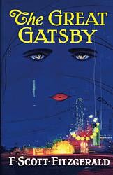

The Great Gatsby
by F. Scott Fitzgerald
The Great Gatsby is a 1925 novel by American writer F. Scott Fitzgerald. Set in the Jazz Age on Long Island, near New York City, the novel depicts first-person narrator Nick Carraway's interactions with Jay Gatsby, a mysterious millionaire obsessed with reuniting with his former lover, Daisy Buchanan.